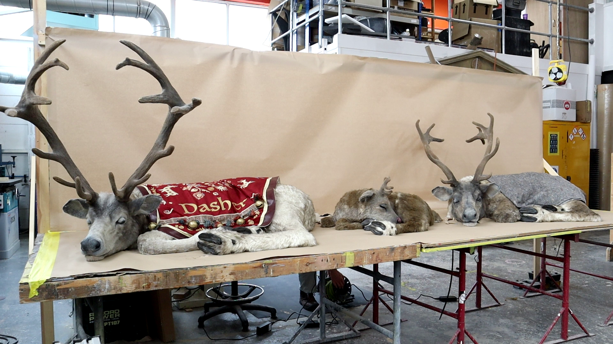
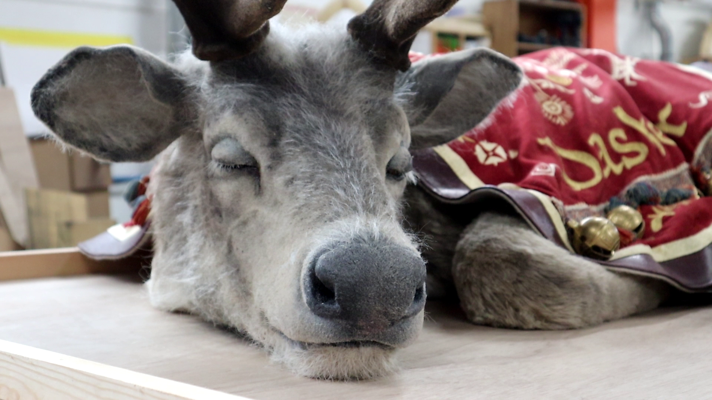
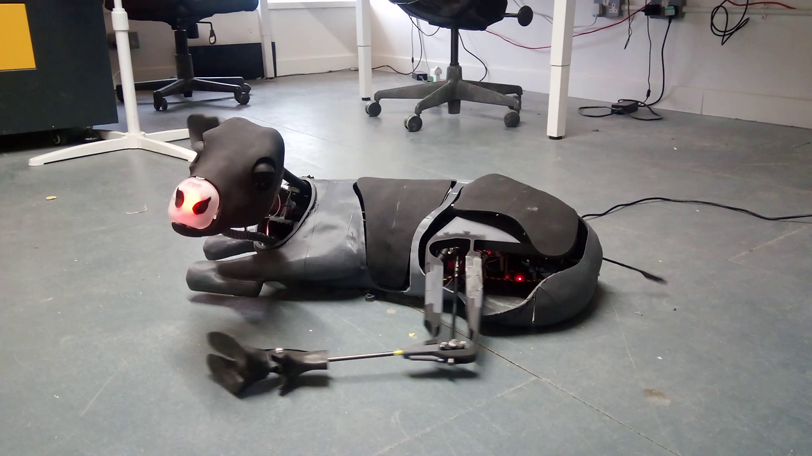

Animatronic Sleeping Reindeer
2025
Made for Lapland UK with Mangostone, a prop making studio in BristolFor 6 months I was an animatronics engineer! working on the electrical/mechanical systems and animation for 7 reindeer. they are being shown in a big budget christmas experience thing in england where they even make fake snow every day! I learned a lot in this project and worked with some really great people.
.